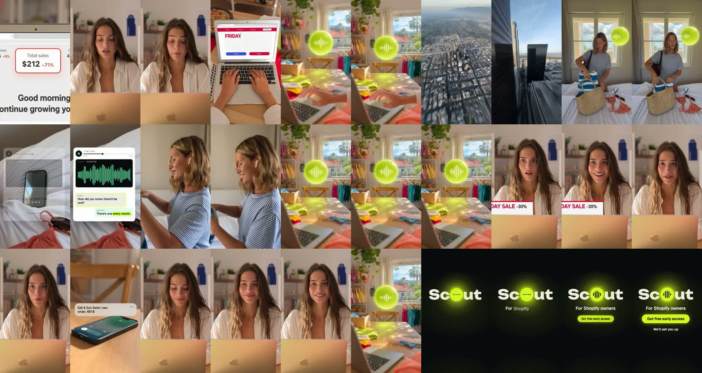

<image1>
Image 1
The owner (face, hair, linen shirt) cast inside her own studio.
Soul 2 · Higgsfield job 9a8b15e8-59c4-4f55-b292-8a5645ff4ad8
A refund pings, she nearly runs another discount, and Scout freezes the moment to show her the shopper who only ever waits for her next sale. Every shot is written as text, and only the faces, the voices, the studio and the real Shopify screens go in as references.
Four parts: asset mapping, a one-sentence summary, a timed plot and additional notes. Seedance 2.5's own examples follow this shape, and its 30 s ones run 379 and 572 words. Ours runs 921 after Emile's memory-orb fix; the sd25-pe version we send runs 1,079 after both H218 checks.
Basic prompting techniques; 2.5 tutorial, "Generate a coherent 30-second video"The guide warns that storyboards "constrain the model's creative output" and are "not strictly aligned" anyway. Text leaves Seedance free to find the shot, and Emile said on Nov 13 to let it choose.
Multi-panel storyboardsShot size, angle and movement go in brackets on every shot. Bullet time is one of the guide's named terms. Each transition gets its trigger second and its method.
Advanced prompting · Camera languageH215's owner lost her bikini studio. Here two owner images (front and back) and an empty plate of that same room (Image 3: Image 4 with the orb painted out) tie her to one studio, and every owner shot names the rails and gives her a bikini or the laptop to handle.
Reference tasks (multi-asset mapping)Every point from his comments on H218, and where it is now.
| Emile said | Status | Where |
|---|---|---|
| Video 1 wouldn't play. | Done | Reference card Video 1 plays (a/video1-end-screen.mp4). |
| "Image 8 sucks, we had better ones." | Done | Image 8 is now The Dip-style call card: player bar, live waveform, Scout's question. (H218 check: the shopper's answer was taken off the card so it doesn't give away her line early.) |
| At 13-17 s he couldn't tell who packs the bag, or that it's a past call. | Addressed, waiting for your check | 11-13s: when she turns to the orb, the shopper's call appears small inside it "like a memory in a glass ball", and Scout says {I called one of your shoppers.} (new, 6 words: past tense says it already happened, "your shoppers" says who she is). The camera then flies into that picture. 13-20s: inside the memory, a soft lime glow stays at the frame edges. 20s: the memory shrinks back into the orb in a lime flash. Also fixed: Scout was heard "through the phone speaker" while she wears earbuds; now "call audio". |
| H229 rule (23:41 UTC): pin the ka-ching to the first notification, a second one only on the full-price order banner, never any chime or ka-ching on the orb. | Done | prompt-sd25pe-final.txt line 25 (0-2s, <The ka-ching of Audio 3> on the Image 6 refund banner) and line 34 (23-25s, on the Image 9 order banner). Line 17 now says it plays exactly twice and never with the orb. The orb's "soft pop" at 8-11s is gone: the orb now fades in silently, so no sound cue sits on it anywhere. |
| Run the final prompt through ByteDance's sd25-pe, show it next to ours, say which to send. | Done | Section 4b: compiled by the real skill, all 11 lines identical by diff. Recommendation: send the sd25-pe version. |
Spend, plainly: this H218 Script card has made no paid generation at all (0 credits; Image 8 was built in HTML). The only credits behind these references, 0.50 for two GPT Image 2.6 stills (Image 2 and the Image 3 studio plate), were spent on the parent card H217 at 5:19 and 5:28 PM ET, before H218 was opened at 6:18 PM ET. Whether that H217 spend stands as an exception to the no-spend rule is Emile's call; nothing more will be spent without his go. The new Scout line is my call to make the past call unmistakable; if Emile wants the script untouched, delete that one line from 11-13s and the visual memory still carries it.
Laid out like ByteDance's example cards.
Higgsfield seedance_2_5 · mode omni_reference (task type reference-to-video, no edit or extend words in the prompt) · draft: true · 480p · 9:16 · 30 s · audio on · 90 credits, one pass. If Emile likes the draft, the final comes from the draft ID at 1080p (the tutorial allows only 1080p for that step; the ID lasts 14 days). Quote its price on the card first. Spent on H218: 0 credits. Carried over from H217 (before this card existed): 0.50 credits for two GPT Image 2.6 stills (Image 2 and the Image 3 studio plate), awaiting Emile's call on that exception. No video was generated.
Limits checked: video refs 4.5 s of 30 s (each must be 2–30 s). Audio refs 7.0 + 7.3 + 2.6 + 7.2 = 24.1 s of 30 s (each 2–30 s; the three voices sit inside the guide's 5–10 s sweet spot). 9 images of 30. Every image fits inside 1080×1920, the final resolution (FAQ, fingerprint-like textures): the largest are Images 6 and 9 at 1080×1920; Image 7 is now 1080×675. Every ref is on Higgsfield; the media or job ID is on each card below.
The characters go in the order they first appear (owner, Scout, shopper), then the screens. The guide's mapping FAQ says this order stops the model swapping characters. The voice files carry timbre only: the words come from the prompt.
The guide's four parts. Every Image N chip jumps to its asset card above. Dialogue uses the guide's format, Character's line (emotion): {…}, and is highlighted.
The same prompt, run through ByteDance's own Seedance 2.5 optimizer (sd25-pe). Round 3: this time the real skill loaded through the Skill tool and ran its self-update; it compiled the revised prompt (with Emile's memory-orb fix) in its own reference-generation template. Checked by script: all 11 lines identical, word for word. Chips jump to the asset cards; lines are highlighted.
Send the sd25-pe version (prompt-sd25pe-final.txt). It is the same film, line for line, and it is what ByteDance's own optimizer produced; the last one that went through it (H217 Team E) was the one Emile called "fucking cool". It adds guards against failures we've seen: voice-file words leaking, the chair in Image 4, mouths moving while someone else speaks, the end-screen clip pulling the job toward an edit, and now the shopper read as a stranger in the present. The cost is length: 1,079 words after both H218 checks, still past ByteDance's longest official 30 s example (740). If the draft comes back muddled, the 921-word original is the clean A/B.
11 shots of 2–4 s each, the same rhythm as The Dip. Integer-second timestamps with no gaps (guide, Timestamps). Click a ▸ to play the Higgsfield preset a move borrows from.
| Time | Shot size | Angle | Movement | Transition | Sound | Line | Inspired by |
|---|---|---|---|---|---|---|---|
| 0-2s | Extreme close-up | Overhead | Slow push in | Opens on the phone | Ka-ching (Audio 3) + refund banner | — | The Dip's macro banner open (H174) |
| 2-4s | Close-up | Slightly low | Follows the phone up | Hard cut | Room tone | Oh, f- a refund. | |
| 4-6s | Close-up | Eye level, to lens | Punch in | Hard cut | Music bed low | Sales are so low this week. | |
| 6-8s | Medium, back view | Behind her | Slow push in to laptop | Hard cut | Room sound drops; inner voice, slightly muffled, close-mic | (V.O.) Maybe it's time for a discount. | Guide FAQ example: "(V.O.) says … keeps her lips closed" |
| 8-11s | Medium to side | Arc | Bullet time: frame freezes, camera keeps arcing | Freeze | Music stops; the orb appears silently | Not yet. There's something you don't know. | Higgsfield Viral "Bullet time" ▸ |
| 11-13s | Close-up | Reverse angle from beside the orb | Fast push into the orb as the line ends | Into the memory: the shopper's call is first seen small inside the orb, then the camera flies into it | Whoosh | I called one of your shoppers. | Higgsfield Viral "Eyes in" (dive through the pupil; here through the orb) ▸ |
| 13-17s | Medium | Eye level | Slow tracking left | Inside the memory: soft lime glow at the frame edges marks a past call | Scout as call audio (she wears earbuds) | Sunset bikini, in your cart three times. What stopped you? | Kept as one 4 s shot: the 10-word line needs about 3.5 s and must finish inside its shot |
| 17-20s | Close-up | Side profile | Slight push in | Hard cut, still inside the memory (lime edge glow) | There's a discount every week. I just wait. | ||
| 20-23s | Close-up | Eye level | Tilt down to her hand clicking Discard (action in the bracket, not between lines) | The memory shrinks back into the orb in a lime flash | Click | I'm training them to wait. / Noted. | Higgsfield Viral "Eyes in", reversed ▸ |
| 23-25s | Close-up | Eye level | Gentle push in | Hard cut, "days later" light; she folds the Sunset bikini into a mailer | Ka-ching (Audio 3); she speaks on the bell | Glad I asked. | Story-ad rule: time passes, line rides the bell |
| 25-30s | Studio fades to black as the orb glides to centre, then as in Video 1 | Orb becomes the "o" | Video 1 audio | Scout interviews your shoppers for you. Get free early access. | H158 end screen (Video 1) | ||
There's no storyboard, no keyframe and no camera video. All the camera direction lives in these brackets, written in the same style as the guide's line-art example ("[Wide shot, locked-off camera, eye-level…]"). Each line shows the reference that holds the shot to the right person and place.

extras/, so only real refs sit in a/ and nobody shifts the upload numbering by mistake.Independent judge, round 1 (before this fix round). Scores out of 10.
| Goal | Guide | Story | Craft | Overall |
|---|---|---|---|---|
| 8.5 | 7.5 | 8.5 | 7 | 7.7 |
| Judge's must-fix | What I changed |
|---|---|
| Image 3 showed a different room (beach, lifeguard tower, black grid window) from Images 1, 2 and 4 (white curtain, red-tile roofs, white rails, pothos), so the refs pointed at two studios. The mapping line also re-described the studio. | New Image 3: an empty plate of the Image 4 room with the orb painted out (GPT Image 2.6 edit, job a0975e5f…, 0.25 cr). Same window, roofs, rails, pothos, chair and table. Mapping line cut to "Image 3 is her studio, the setting of every owner shot." with no re-description. |
| The end shot gave Video 1 (4.501 s, 10-word line) only 4 s, and its camera bracket fought the reference. | "Glad I asked." now runs 23–25s; the end shot runs 25–30s (5 s). Its bracket is now "[As in Video 1]". Shot table and camera rows updated to match. |
| The page claimed every image is no larger than 1080×1920, but Image 7 was 1600×1000. | Image 7 re-exported at 1080×675 (same 16:10 framing) and re-uploaded. The limits line now states the real sizes. |
a/ to extras/.A faithful example of the basic text-plus-reference-images technique: no storyboard, keyframes or camera video; the guide's four parts; [shot size, angle, movement] on every shot; whole-second timestamps with no gaps; the guide's dialogue and V.O. formats; "No subtitles" as the only negative; all 8 beats with tight lines; no client names or EXAMPLE labels. The serious flaw was in the assets: Image 3 was a different room from Images 1, 2 and 4, which could bring back the H215 studio drift. Second, the end screen got 4 s for a 4.5 s reference, so the last word would likely be clipped. Fix the three must-fix items before any paid draft.
Status after this round: all three must-fix items done and seven of eight nice-to-haves done. Not re-scored yet. Spend this round (on H217, before H218 existed): 0.25 credits (one image, the Image 3 plate). No video generated.